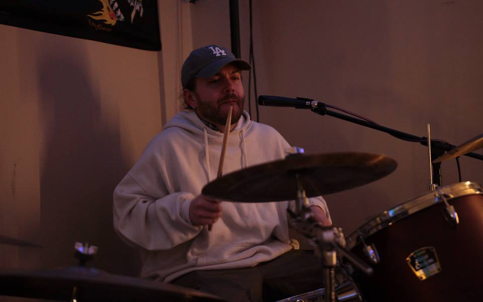
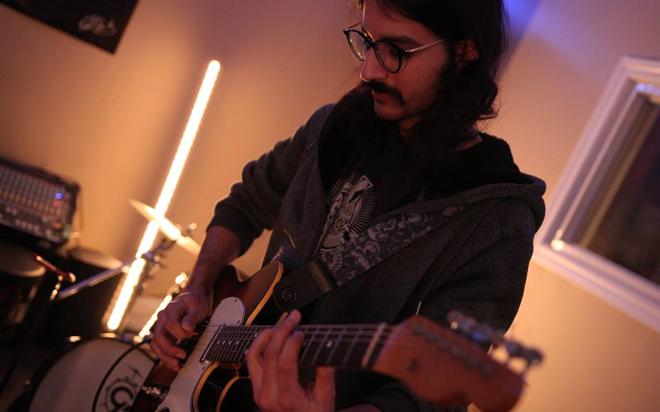
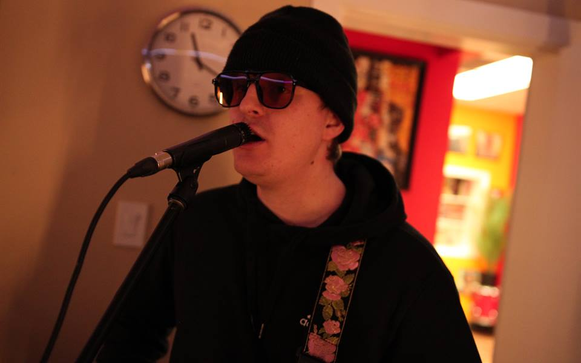
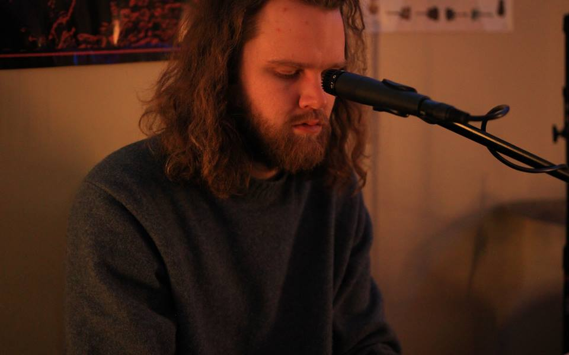

Basement Rehearsal Lock-In

PhotoRhythm Section Run-Through
Drum takes and transitions dialed in before the set order locked.
Rehearsal Cut
Embedded from the band YouTube archive for a live-in-the-room counterpart.

PhotoLead Line Check
Quick capture from a pass focused on tightening melodic handoffs.

PhotoGuitar Tone Pass
A quieter frame from the setup stretch before the room opened up.

PhotoKeys Arrangement Notes
Added as a fourth still so the section reads more like a full event roll.